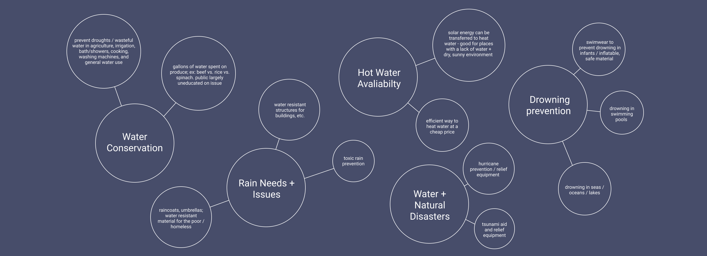
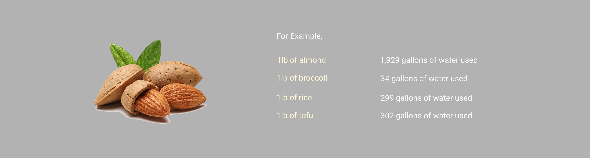
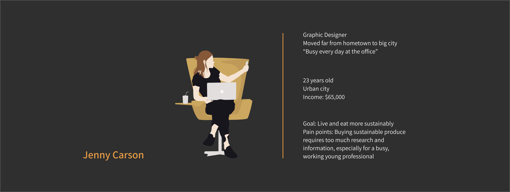

Introduction
Footprint aims to raise awareness of water consumption through an innovative and visually eye-catching app. With a simple, eye-catching, and clear design, people of all ages—from adults to kids—can see and gain an understanding of the amount of hidden water in certain produce.
Project Background
This app was built during HackDavis 2019, and thus, we had 24 hours to come up with an idea, iterate, develop, and present. Within the different tracks presented at the hackathon, we chose to tackle sustainability—a topic that we found to be both important and having vast opportunities and implications with tech.
A year ago, Minhee and I had taken DES 1 (Introduction to Design) and for our final project, had been on a team together (with Thorie Asgeirsdottir and Christina Aliev) that focused tackling sustainable solutions to water consumption in produce. This DES 1 project took around 1 month, and involved extensive user research and presentations as well as prototypes of a physical barcode design. At HackDavis, we decided to further expand on this project as a team of four and worked on developing a digital app that was simple and accessible. Thus, this case study combines both user research done in DES 1 as well prototypes + development created during HackDavis!
Needfinding
Initial Research
Interviews
As a team, we were assigned the overarching theme of water and sustainabiity, and thus, began identifying needs in relation to this topic. By delving into research papers, books, and online articles, we found that
- for third-world countries, the problem lies primarily in water transportation / access to water and water purification, but these must be solved with lost-cost and innovative solutions.
- for first-world countries, the problem lies primarily in water filtration, water conservation, and our water-related environmental footprint.
In order to most appropriately use ethnocentric methods to design for a user audience, we decided to tackle an audience that we were most accessible to—people from a first-world country; the people around us. To further understand the needs of these people, we interviewed 14 people over the course of a week to find out what was most in need in terms of water.
Brainstorming
Next, we brainstormed—listing first-world needs, opportunities, and problems related to water that we found from interviews, additional research, as well as personal insights.
After filtering ideas, our group decided to focus on water conservation through an agricultural aspect. With UC Davis as an agricultural school, professors and students around us in animal science / agriculture, and with various co-ops, farmers markets, and sustainable farming / nutrition literacy initiatives, we decided we could best gather insights and design for this specific field.

Secondary Research
Secondary Research
Expert Interviews
Now that we had a specific problem focus, we conducted expert interviews (fourth-year Animal Science Majors, a Meat Lab Intern, a Davis Co-op supervisor, etc.), online research, and read research papers / articles to further flesh out research for us to better understand this topic.
From this, one thing we learned was that while we often associate water conservation with cutting back on showers, gardening, and other examples, it’s important to note that the food we eat also uses gallons of water to grow. Here, California grows “nearly half of all US fruits, veggies, and nuts” that we are “on track to experience the driest year in the past half millennium” (motherjones). Fruits, nuts, meat, and vegetables such as broccoli, almonds, beef, and lettuce are accountable for the loss in water—so much so, that farms use about 80% of the state’s developed water (water from its natural source).
The public is largely uneducated about this fact, and it’s also difficult to know how much water is used in the produce you’re buying. To look up each item one-by-one is also extremely exhausting, which contributes to this lack in education.

Cross comparision of the amount of water used in specific produce.
Gathering Insights
Pain Points
Design Guidelines
With the completion of all our research, we wanted to synthesize all ideas to form clear pain points.
- Water conservation ties to the food we eat and uses gallons to grow; this information is relatively unknown
- There is a lack of awareness about how much hidden water is in the products consumers are buying
- Being water-conscious is exhausting and requires too much energy. There needs to be an easier way to be wise about water consumption
- Thus, consumers feel an unmotivated / passive about comparing across brands to choose better water-wise options.
In addition, we outlined overall restrictions that our solution had to meet.
- We don't want our design to force people into anything, but rather encourage them to engage with their grocery shopping in a different way
- Davis students and residents are already more nutrition literate + sustainable than the nationwide average. We want to be able to reach all audiences, not just those in Davis
- We want to create an easy, convenient way for people to implement small changes in the way they shop
- Our design needs to be easy to understand and exciting, even to children—that way, we can educate everyone, not just adults, in becoming more water conscious.
Key User Needs
Personas
After reviewing our interviews, we concluded that our audience would be everyday customers of grocery stores, farmers markets, co-ops, and produce-related shops. Anywhere where produce was sold, we wanted our design to reach.
In particular, we could particularly reach people who want to live more sustainably. Thus, we constructed a persona based on this information.

Problem
There is a lack of easily accessible information about water consumption in the produce we buy.
Solution
Foodprint is an app that addresses the sustainability issue of water usage in the products we consume. By scanning the barcode attached to the price tag of grocery store items, the app displays how much water it takes to provide the produce. By informing customers how much hidden water is in the produce they are buying, they can be encouraged to compare across brands and choose a water-wise option.
Rapid Prototypes
Wireframes
In order to target the problem statement, our app needed to
1) Scan the barcode
2) Display how much water it took
3) Be able to save existing scans
4) Create a search functionality.
Thus, we implemented these features, as shown in these sketches.
Camera—Landing page; is a camera for the user to scan the Foodprint bar code.
Display pop-up—After the item is scanned, the pop-up informs the user of the water grade for the produce.
Saved—Shows saved items. Allows user to go back and see past scans.
Search—Allows users to search up water grade for produce in existing database.
Branding
Digital Prototypes
Results
View the prototype and links below!
Invision Prototype
Github
Presentation
Takeaways
Limitations + Further Work
Reflection
Because HackDavis was 24 hours, we had limitations in this project, such as:
- Not enough time + energy! There was much more we could have further implemented, such as utilizing Google’s Cloud Vision API to detect images of the produce itself (instead of a barcode). This would eliminate the need to add physical barcodes to price tags in every grocery store, overall improving efficiency.
- None of us had touched Swift prior to HackDavis 2019, and the first few hours of HackDavis entailed Celina and I designing initial prototypes, while June and Minhee quickly picked up as much Swift as they could. It was chaotic! But a great learning experience overall.
- We weren’t able to conduct user testing on prototypes due to lack of time—all iterations were done with decisions by Celina and I. If we were to further work on this project, we would greatly benefit from testing!
Nevertheless, for all four of us, HackDavis was our first hackathon, yet we spent the entire time devoting ourselves to prototyping, wireframing, designing, and pushing code (all while on less than 4 hours of sleep + with lots of yerba mate!). All of us felt that creative excitement and were so eager to build even in our insecurity and lack of experience...and I'm glad we pushed through and learned so much along the way.
Excited!